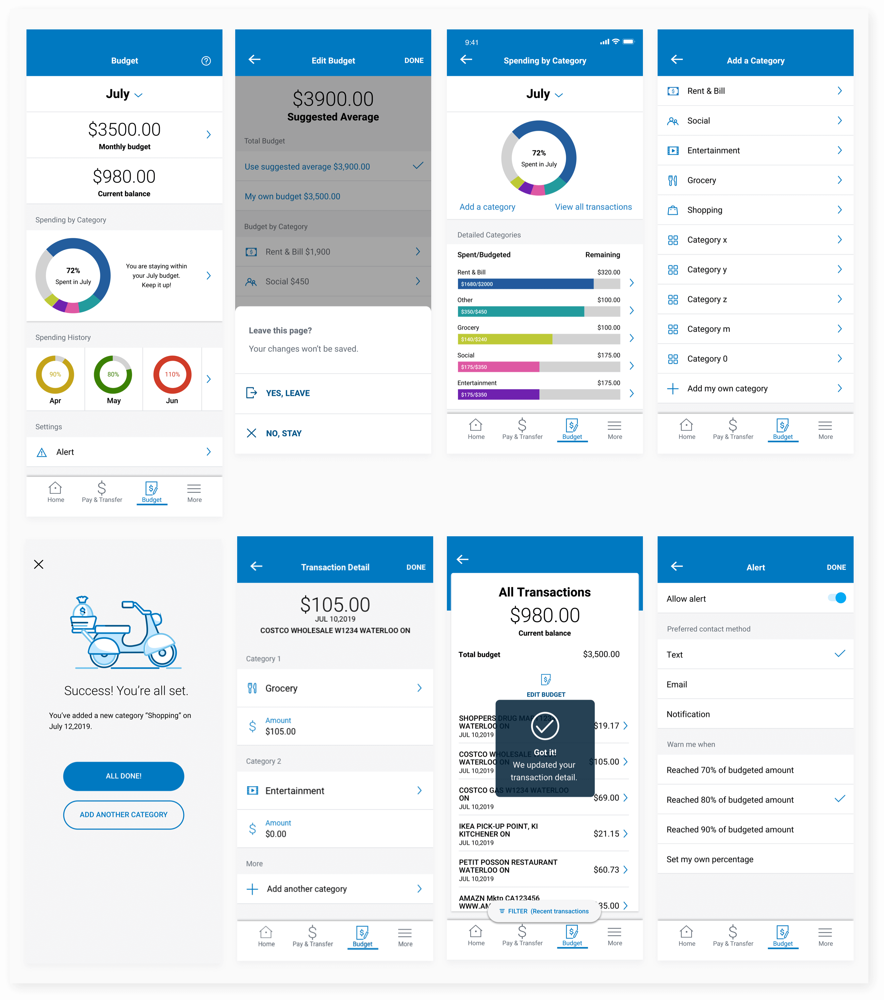

Bank of Montreal
Bank of Montreal, known as BMO is one of the Big Five banks in Canada. Their current mobile app is well rated, but very basic in functionality. In order to stay competitive, BMO could provide users with personalized features that allow them to budget and track their personal finances.
Roles: User Research, Information Architecture, UX/UI Design, Prototype, Testing.
Tools: Sketch, InVision, Principle
Duration: July 2019 (2 weeks/80 hours)
Problem Statement
How might we help consumers to manage their personal finances easily?
Proposed Solution
Integrate a money budgeting and tracking feature into BMO’s mobile app seamlessly. Main focus: budget overview and personalization.
Process

EMPATHIZE
Market Research
To understand the industry, trends and target audiences.
I started off by doing online market research to learn more about this topic. My goals were to understand more about mobile banking industry including their trends and challenges. How consumers currently budget and tracking their money. The research shows that bank apps should target millennials and generation X. In additional, nearly half of millennials want their bank to provide tools to help them monitor budget.

Competitive Analysis
I decided to conduct a heuristic evaluation with BMO’s current mobile app to give me a better understanding of their design patterns. Next, I did a competitive analysis on the Big Five banks of Canada. This analysis shows that TD and RBC banks have budget feature for their apps. BMO is doing well in terms of usability, but their app is very limited in functionality as compared to all other banks. It would be advantageous for BMO to offer more features that millennials want.

Interview
To learn more about our target users, I conducted 6 in-person interviews with BMO’s consumers that are aged from 20-35. (4 Females, 2 Males) All participants have or had money budgeting and tracking habit. For the interviews, I focused on asking consumers’ experiences with BMO both online and in branch, their experiences with money budgeting/Tracking. By the end, I gained valuable insights from them.
DEFINE
To clarify details of what will be created, for who and how.
After 6 interviews, I began synthesizing my findings by organizing all data into an empathy map. From this exercise, I could uncover our users’ needs, motivation, goals and frustrations. This empathy map was very useful to visualize our findings and to help us understand the mindset of our users.
Empathy Map

Insights:
- Users want to save time.
- Users track their spending.
- Users budget their money.
Needs:
- To have simple to use applications.
- To know their financial status.
- To feel in control of their money.
Persona
The above empathy map helped me to create our persona “Maya”. Maya represents the millennial target consumers of BMO. She’s a young work professional who manages her money carefully because she wants to save money for big purchases. By giving personally to the research data, we can better empathize with target users throughout the design process.

POV + HMW
After defining our target users, I created point of view statements for our users using insights and needs from previous research. These statements helped me to created “how might we” questions to define user problems and to help brainstorm for solutions.

Product Roadmap
Keeping HMW questions in mind, I started to brainstorm potential solutions. A Venn diagram was also created to show the shared goals because I wanted to make sure we understand the big picture. I then created this product roadmap to prioritize goals and features for the app. I prioritized them based on their impact and feasibility. This roadmap helped to me to define key features for the app.

Sitemap
Next, I wanted to make sure the new features will be seamlessly integrated in the app for our users to easily navigate. I went to my BMO app to analyze their layout and created a sitemap to visually represent the information architecture. While creating the sitemap, I made sure I refer to users’ needs to organize information in a way that users would expect.
Information Architecture

Task flow + User flow
After finishing the sitemap, I created a task flow to show the most common flow of our users. Then a user flow to show various ways that our users could interact with our app based on their decisions and different scenarios I found during the research phase. Task flow and user flow helped me to effectively identify key screens and the relationship between them.


DESIGN
Low-fidelity Wireframes
This stage is to identify solutions to problems through design.
I started to sketch out low-fidelity wireframes to show the layout and information architecture of the new screens. I also consistently checked my BMO app to make sure my design would be consistent with their design pattern. This helped me to quickly and efficiently get feedback before deciding on which direction to move on.

Branding
Before moving into high-fidelity wireframes, I wanted to have a deeper understanding of BMO’s branding. To do this, I studied BMO’s branding guidelines and other online references to create this mood board. I then created a style tile based on BMO’s current design to ensure cohesiveness.
Style Tile

High-fidelity Wireframes
Because BMO is an existing app and my time was limited, I decided to go directly to high-fidelity wireframes. Using low-fidelity wireframes and style tile, I created my high-fidelity wireframes on Sketch. While designing, I had my BMO app open to make sure all my designs would follow their existing design patterns. You could check prototype for all screens.
PROTOTYPE + TESTING
With the high-fidelity wireframes, I created a mobile prototype using InVision to gather usability data from BMO users. I created a test plan outlining the test objectives, methodologies, tasks and participants’ recruit plan. I then conducted 5 in-person usability tests with strangers. Each participant was given specific scenarios with the focus on exploring new features to budget and track their personal finances. This allowed me to gain valuable feedback from users.
Affinity Map
I created an affinity map to better visualize my findings and observations from usability tests. This helped me to identify patterns and organize feedback in a way that was easier to extract design recommendations from.

Insights:
- 100% users had a difficult time finding where to edit budget.
- 100% users noticed “spending by category” first. (Section 2)
- 100% users went to spending by categories to edit social budget.
- 60% users didn’t expect category type and amounts to be in different sections.
- 40% users didn't understand the numbers and colors in history section.
Needs:
- Separate information into individual rows.
- Remove category types and percentage in “spending by category” section.
- Add “Edit budget” under transactions screen.
- Group “category type” and “amount” in the same section.
- Remove numbers. Use color codes and percentage spent to let users know their status.
ITERATION
To iterate upon designs and develop high-fidelity wireframes
Revision 1

Revision 2
Revision 3

Revision 4

UI Kit
I organized all UI element that were used in high-fidelity wireframes together on a UI kit for future reference.

Final Prototype
Tasks:
- Task 1: Find suggested July budget vs. your own budget.
- Task 2: Find suggested social budget vs. your own budget.
- Task 3: Go through detailed spending by categories.
- Task 4: Add shopping category.
- Task 5: Find “Costco wholesale w1234 Waterloo, $105” transaction.
- Task 6: Input the amount for each category. $65 for grocery, $35 for entertainment.
- Task 7: Enable alert.
REFLECTION
I really liked this project because I found it is like a real-world project since the aim was to improve an existing product by adding new features instead of creating an app from scratch. It is definitely a challenging but rewarding project. Working with an existing app means that we need follow their existing branding guidelines. BMO’s app is fairly simple, they mostly use blue, gray and white. The app has very few design patterns because they are very limited in functionality. It was not easy to add the new features due to the constraints, but by analyzing and analyzing their existing app, I managed to integrate the new features while maintaining consistency.
What I learned:
- Take the time to really analyze and understand the exsiting app to ensure cohesiveness.
- Usability testing is important. As a designer, we take things for granted, we sometimes don’t see little problems, but each user is different, by testing with them, we can better understand their pains.
What would I have done differently giving more time?
- I'd like to develop a section that helps users to save money to reach their goals.
Thank you for making it all the way to the end. You might also like